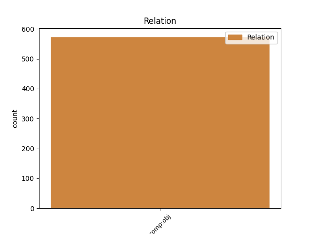
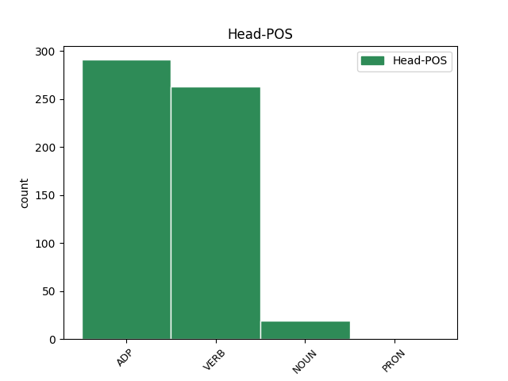
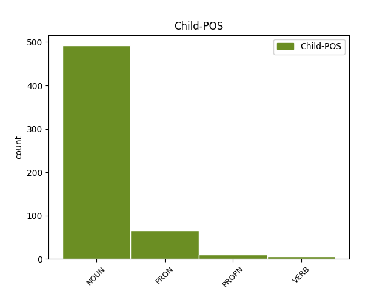

Distribution of features within this leaf



Agreement Rules sorted by frequency.
- When the dependent token is the direct object complements(comp:obj) of the head token, and the dependent token is NOUN.
1 Ճիշտ _ _ _ _ 0 _ _ _
2 է _ _ _ _ 0 _ _ _
3 , _ _ _ _ 0 _ _ _
4 հերոսություն հերոսություն NOUN _ Animacy=Nhum|Case=Nom|Definite=Ind|Number=Sing 5 comp:obj _ LTranslit=herosowt’yown|Translit=herosowt’yown
5 անելը անել VERB _ Case=Nom|Definite=Def|Number=Coll|Polarity=Pos|Subcat=Tran|VerbForm=Gdv|Voice=Act 0 _ _ _
6 նրանց _ _ _ _ 0 _ _ _
7 ` _ _ _ _ 0 _ _ _
8 զինվորների _ _ _ _ 0 _ _ _
9 , _ _ _ _ 0 _ _ _
10 նաև _ _ _ _ 0 _ _ _
11 առաքելությունն _ _ _ _ 0 _ _ _
12 է _ _ _ _ 0 _ _ _
13 : _ _ _ _ 0 _ _ _
1 Ինչ _ _ _ _ 0 _ _ _
2 - _ _ _ _ 0 _ _ _
3 որ _ _ _ _ 0 _ _ _
4 բանը _ _ _ _ 0 _ _ _
5 , _ _ _ _ 0 _ _ _
6 որ _ _ _ _ 0 _ _ _
7 մեզ _ _ _ _ 0 _ _ _
8 ստիպում _ _ _ _ 0 _ _ _
9 էր _ _ _ _ 0 _ _ _
10 այդպես _ _ _ _ 0 _ _ _
11 զգալ _ _ _ _ 0 _ _ _
12 , _ _ _ _ 0 _ _ _
13 որ _ _ _ _ 0 _ _ _
14 պիտի _ _ _ _ 0 _ _ _
15 ստիպեր _ _ _ _ 0 _ _ _
16 այդպես _ _ _ _ 0 _ _ _
17 մտածել _ _ _ _ 0 _ _ _
18 և _ _ _ _ 0 _ _ _
19 նրանց նա PRON _ Case=Dat|Number=Plur|Person=3|PronType=Prs 22 comp:obj _ LTranslit=na|Translit=nranc’
20 առաջին _ _ _ _ 0 _ _ _
21 անգամ _ _ _ _ 0 _ _ _
22 տեսնողին տեսնող NOUN _ Animacy=Hum|Case=Dat|Definite=Def|Number=Sing 0 _ _ _
23 , _ _ _ _ 0 _ _ _
24 ինչ _ _ _ _ 0 _ _ _
25 - _ _ _ _ 0 _ _ _
26 որ _ _ _ _ 0 _ _ _
27 բանը _ _ _ _ 0 _ _ _
28 մեր _ _ _ _ 0 _ _ _
29 մեջ _ _ _ _ 0 _ _ _
30 չէր _ _ _ _ 0 _ _ _
31 , _ _ _ _ 0 _ _ _
32 այլ _ _ _ _ 0 _ _ _
33 նրանց _ _ _ _ 0 _ _ _
34 ։ _ _ _ _ 0 _ _ _
Disagree Examples:
1 Եդեմն _ _ _ _ 0 _ _ _
2 այլ _ _ _ _ 0 _ _ _
3 մոլորակ _ _ _ _ 0 _ _ _
4 էր _ _ _ _ 0 _ _ _
5 , _ _ _ _ 0 _ _ _
6 աքսորավայրը _ _ _ _ 0 _ _ _
7 ՝ _ _ _ _ 0 _ _ _
8 այլ _ _ _ _ 0 _ _ _
9 , _ _ _ _ 0 _ _ _
10 այսինքն _ _ _ _ 0 _ _ _
11 ՝ _ _ _ _ 0 _ _ _
12 այս _ _ _ _ 0 _ _ _
13 , _ _ _ _ 0 _ _ _
14 ուր _ _ _ _ 0 _ _ _
15 այժմ _ _ _ _ 0 _ _ _
16 էլ _ _ _ _ 0 _ _ _
17 բնակվում _ _ _ _ 0 _ _ _
18 ենք _ _ _ _ 0 _ _ _
19 , _ _ _ _ 0 _ _ _
20 բայց _ _ _ _ 0 _ _ _
21 միշտ _ _ _ _ 0 _ _ _
22 նայում _ _ _ _ 0 _ _ _
23 ենք _ _ _ _ 0 _ _ _
24 երկինք _ _ _ _ 0 _ _ _
25 ՝ _ _ _ _ 0 _ _ _
26 բնազդում _ _ _ _ 0 _ _ _
27 դրոշմված _ _ _ _ 0 _ _ _
28 հիշողությամբ _ _ _ _ 0 _ _ _
29 Եդեմը եդեմ NOUN _ Animacy=Nhum|Case=Nom|Definite=Def|Number=Coll 30 comp:obj _ LTranslit=edem|Translit=Edemë
30 որոնելով որոնել VERB _ Case=Ins|Definite=Ind|Number=Coll|Polarity=Pos|Subcat=Tran|VerbForm=Gdv|Voice=Act 0 _ _ _
31 ։ _ _ _ _ 0 _ _ _
1 Իսկ _ _ _ _ 0 _ _ _
2 այն _ _ _ _ 0 _ _ _
3 չկա _ _ _ _ 0 _ _ _
4 , _ _ _ _ 0 _ _ _
5 Տերը _ _ _ _ 0 _ _ _
6 պայթեցրել _ _ _ _ 0 _ _ _
7 է _ _ _ _ 0 _ _ _
8 կամ _ _ _ _ 0 _ _ _
9 գուցե _ _ _ _ 0 _ _ _
10 ամայացրել _ _ _ _ 0 _ _ _
11 , _ _ _ _ 0 _ _ _
12 բնակության _ _ _ _ 0 _ _ _
13 համար _ _ _ _ 0 _ _ _
14 անպիտան _ _ _ _ 0 _ _ _
15 դարձրել _ _ _ _ 0 _ _ _
16 , _ _ _ _ 0 _ _ _
17 կամ _ _ _ _ 0 _ _ _
18 էլ _ _ _ _ 0 _ _ _
19 կա _ _ _ _ 0 _ _ _
20 ու _ _ _ _ 0 _ _ _
21 ախտահանվում _ _ _ _ 0 _ _ _
22 է _ _ _ _ 0 _ _ _
23 ՝ _ _ _ _ 0 _ _ _
24 նոր _ _ _ _ 0 _ _ _
25 բնակիչներ բնակիչ NOUN _ Animacy=Hum|Case=Nom|Definite=Ind|Number=Plur 26 comp:obj _ LTranslit=bnakič|Translit=bnakičner
26 ընդունելու ընդունել VERB _ Case=Dat|Definite=Ind|Number=Coll|Polarity=Pos|Subcat=Tran|VerbForm=Gdv|Voice=Act 0 _ _ _
27 համար _ _ _ _ 0 _ _ _
28 ։ _ _ _ _ 0 _ _ _
1 Գայթակղում _ _ _ _ 0 _ _ _
2 են _ _ _ _ 0 _ _ _
3 սվսվոցով _ _ _ _ 0 _ _ _
4 , _ _ _ _ 0 _ _ _
5 շվշվոցով _ _ _ _ 0 _ _ _
6 , _ _ _ _ 0 _ _ _
7 խաղալիքներ խաղալիք NOUN _ Animacy=Nhum|Case=Nom|Definite=Ind|Number=Plur 8 comp:obj _ LTranslit=xaġalik’|Translit=xaġalik’ner
8 շխշխկացնելով շխկշխկացնել VERB _ Aspect=Iter|Case=Ins|Definite=Ind|Number=Coll|Polarity=Pos|Subcat=Tran|VerbForm=Gdv|Voice=Act 0 _ _ _
9 ... _ _ _ _ 0 _ _ _
1 Ես _ _ _ _ 0 _ _ _
2 Հիսուսն _ _ _ _ 0 _ _ _
3 եմ _ _ _ _ 0 _ _ _
4 , _ _ _ _ 0 _ _ _
5 ունեցածդ _ _ _ _ 0 _ _ _
6 թափի _ _ _ _ 0 _ _ _
7 , _ _ _ _ 0 _ _ _
8 իմ ես PRON _ Case=Gen|Number=Sing|Person=1|PronType=Prs 9 comp:obj _ LTranslit=es|Translit=im
9 ետևից ետև ADP _ AdpType=Post|Case=Abl 0 _ _ _
10 արի _ _ _ _ 0 _ _ _
11 ՛ _ _ _ _ 0 _ _ _
12 ... _ _ _ _ 0 _ _ _
1 Կբուժենք _ _ _ _ 0 _ _ _
2 , _ _ _ _ 0 _ _ _
3 կվերադարձնենք _ _ _ _ 0 _ _ _
4 հասարակությանը _ _ _ _ 0 _ _ _
5 , _ _ _ _ 0 _ _ _
6 բա _ _ _ _ 0 _ _ _
7 ոնց _ _ _ _ 0 _ _ _
8 ՞ _ _ _ _ 0 _ _ _
9 , _ _ _ _ 0 _ _ _
10 թե _ _ _ _ 0 _ _ _
11 չէ _ _ _ _ 0 _ _ _
12 ամեն _ _ _ _ 0 _ _ _
13 մեկը _ _ _ _ 0 _ _ _
14 որ _ _ _ _ 0 _ _ _
15 էսպես _ _ _ _ 0 _ _ _
16 ինքնագլուխ _ _ _ _ 0 _ _ _
17 փախչի _ _ _ _ 0 _ _ _
18 , _ _ _ _ 0 _ _ _
19 ում _ _ _ _ 0 _ _ _
20 ՞ _ _ _ _ 0 _ _ _
21 ուղեղն _ _ _ _ 0 _ _ _
22 ու _ _ _ _ 0 _ _ _
23 գրպանն _ _ _ _ 0 _ _ _
24 ենք _ _ _ _ 0 _ _ _
25 մտնելու _ _ _ _ 0 _ _ _
26 , _ _ _ _ 0 _ _ _
27 ում _ _ _ _ 0 _ _ _
28 ՞ _ _ _ _ 0 _ _ _
29 ձեռն _ _ _ _ 0 _ _ _
30 ենք _ _ _ _ 0 _ _ _
31 հրացան _ _ _ _ 0 _ _ _
32 տալու _ _ _ _ 0 _ _ _
33 ու _ _ _ _ 0 _ _ _
34 սահմանների սահման NOUN _ Animacy=Nhum|Case=Dat|Definite=Ind|Number=Plur 35 comp:obj _ LTranslit=sahman|Translit=sahmanneri
35 վրա վրա ADP _ AdpType=Post|Case=Nom 0 _ _ _
36 պահակ _ _ _ _ 0 _ _ _
37 կարգելու _ _ _ _ 0 _ _ _
38 , _ _ _ _ 0 _ _ _
39 ով _ _ _ _ 0 _ _ _
40 ՞ _ _ _ _ 0 _ _ _
41 է _ _ _ _ 0 _ _ _
42 քվեարկելու _ _ _ _ 0 _ _ _
43 , _ _ _ _ 0 _ _ _
44 ով _ _ _ _ 0 _ _ _
45 ՞ _ _ _ _ 0 _ _ _
46 է _ _ _ _ 0 _ _ _
47 հաստոց _ _ _ _ 0 _ _ _
48 աշխատացնելու _ _ _ _ 0 _ _ _
49 , _ _ _ _ 0 _ _ _
50 ում _ _ _ _ 0 _ _ _
51 ՞ _ _ _ _ 0 _ _ _
52 ենք _ _ _ _ 0 _ _ _
53 բանտ _ _ _ _ 0 _ _ _
54 նստացնելու _ _ _ _ 0 _ _ _
55 , _ _ _ _ 0 _ _ _
56 ով _ _ _ _ 0 _ _ _
57 ՞ _ _ _ _ 0 _ _ _
58 է _ _ _ _ 0 _ _ _
59 արյուն _ _ _ _ 0 _ _ _
60 տալու _ _ _ _ 0 _ _ _
61 , _ _ _ _ 0 _ _ _
62 ով _ _ _ _ 0 _ _ _
63 ՞ _ _ _ _ 0 _ _ _
64 է _ _ _ _ 0 _ _ _
65 դրոշի _ _ _ _ 0 _ _ _
66 տակ _ _ _ _ 0 _ _ _
67 մտնելու _ _ _ _ 0 _ _ _
68 , _ _ _ _ 0 _ _ _
69 առաջնորդի _ _ _ _ 0 _ _ _
70 ետևից _ _ _ _ 0 _ _ _
71 գնալու _ _ _ _ 0 _ _ _
72 , _ _ _ _ 0 _ _ _
73 ում _ _ _ _ 0 _ _ _
74 ՞ _ _ _ _ 0 _ _ _
75 ենք _ _ _ _ 0 _ _ _
76 ասելու _ _ _ _ 0 _ _ _
77 ՝ _ _ _ _ 0 _ _ _
78 մեղքի _ _ _ _ 0 _ _ _
79 զգացում _ _ _ _ 0 _ _ _
80 , _ _ _ _ 0 _ _ _
81 պատասխանատվություն _ _ _ _ 0 _ _ _
82 , _ _ _ _ 0 _ _ _
83 « _ _ _ _ 0 _ _ _
84 Ազգը _ _ _ _ 0 _ _ _
85 վեր _ _ _ _ 0 _ _ _
86 է _ _ _ _ 0 _ _ _
87 ամեն _ _ _ _ 0 _ _ _
88 ինչից _ _ _ _ 0 _ _ _
89 ... _ _ _ _ 0 _ _ _
90 » _ _ _ _ 0 _ _ _
91 , _ _ _ _ 0 _ _ _
92 « _ _ _ _ 0 _ _ _
93 Մահ _ _ _ _ 0 _ _ _
94 իմացյալ _ _ _ _ 0 _ _ _
95 անմահություն _ _ _ _ 0 _ _ _
96 է _ _ _ _ 0 _ _ _
97 ... _ _ _ _ 0 _ _ _
98 » _ _ _ _ 0 _ _ _
99 և _ _ _ _ 0 _ _ _
100 այլն _ _ _ _ 0 _ _ _
101 , _ _ _ _ 0 _ _ _
102 և _ _ _ _ 0 _ _ _
103 այլն _ _ _ _ 0 _ _ _
104 ։ _ _ _ _ 0 _ _ _